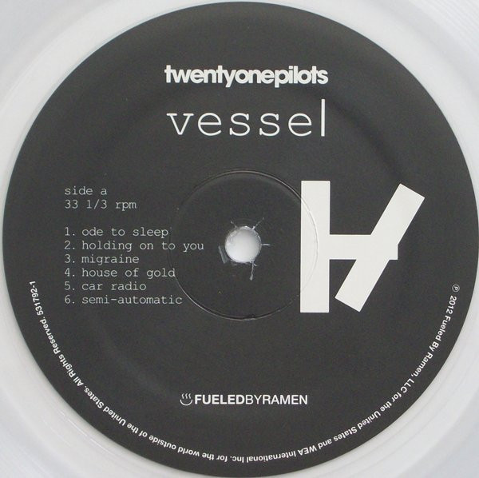

- 100 % Algodón
- Made in USA
- Machine Wash 100% algodón.
- Corte clásico. Gráficos serigrafiados.
- Producto oficial.
BS 89.99
- botón de logotipo de 1 pulgada
BS 6.99

- Sello: Fueled By Ramen – 531792-1
Formato: Vinilo, LP, Album, Limited Edition, Clear
País: US
Publicado: 27 may 2014
Género: Electronic, Hip Hop, Rock, Pop
Estilo: Synth-pop, Indie Rock, Alternative Rock
- Made in USA
- Machine Wash 100% algodón.
- Corte clásico. Gráficos serigrafiados.
- Producto oficial.
BS 299.99